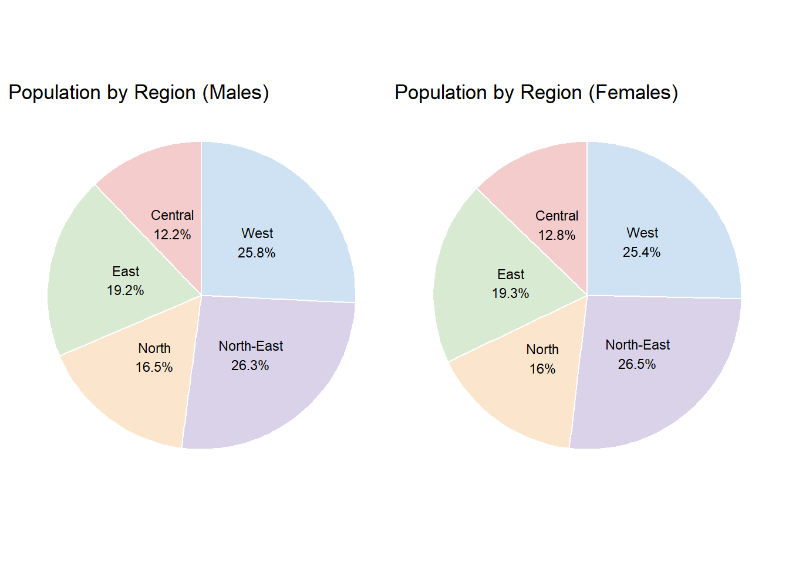

This is on the Phase ll of Take-home exercise 1 where I will be evaluating and critiquing on one of my peer’s, Celin, Take-home exercise 1 from her Netlify shown here.
1. Overview
In this phase 2, I will be providing 3 good design principles and 3 areas for further improvements for data visualization of plots done by Celin.
2. Critique of Plots
Pie Chart by Region
For the pie chart shown below, there are some good design principles such as:
Labeling of slices: The chart labels shown on the legend directly corresponds with the category and percentage shown.
Flat 2D design: This avoids the distortion of the pie chart that could happen when using a 3D plot.
Sorted Slices in descending order: As the slices are arranged sequentially from biggest to smallest in a clockwise direction, this helps me to quickly grasp the distribution of values.
Areas to improve on:
Limit the chart to one variable: The pie chart should only show one factor instead of comparing two factors as it is quite difficult to interpret visually. It would be clearer if it is focused on one factor - such as gender and use colour variations to represent the regions within that category.
Unclear percentage meaning: I am unable to distinguish what the total percentage actually represent - whether they are referirng to the distribution by region within the total population or by gender when I look at the chart visually. This ambiguity makes the chart pretty confusing and would need further clarification
Improve colour transparency: This makes the chart harder to distinguish between sections. Hence, reduce the opacity or use more contrasting colours to enhance the readability
# A tibble: 6 × 7
Planning_Area Subzone Age Sex Population Age_numeric Region
<chr> <chr> <fct> <chr> <dbl> <dbl> <chr>
1 Ang Mo Kio Total <NA> Total 159340 NA North-East
2 Ang Mo Kio Total <NA> Males 75600 NA North-East
3 Ang Mo Kio Total <NA> Females 83740 NA North-East
4 Ang Mo Kio Total 0 Total 810 0 North-East
5 Ang Mo Kio Total 0 Males 410 0 North-East
6 Ang Mo Kio Total 0 Females 410 0 North-East
Modified Pie Chart
Code
pie_all_regions <- resident_regioned %>%group_by(Region, Sex) %>%summarise(Population =sum(Population, na.rm =TRUE), .groups ="drop") %>%filter(!is.na(Population) & Population >0)male_data <- pie_all_regions %>%filter(Sex =="Males") %>%mutate(label =paste0(Region, "\n", round(Population /sum(Population) *100, 1), "%") )female_data <- pie_all_regions %>%filter(Sex =="Females") %>%mutate(label =paste0(Region, "\n", round(Population /sum(Population) *100, 1), "%") )region_colors <-c("Central"="#f4cccc","East"="#d9ead3","North"="#fce5cd","North-East"="#d9d2e9","West"="#cfe2f3")# Plot: Two pie charts with direct labelsmale_pie <-ggplot(male_data, aes(x ="", y = Population, fill = Region)) +geom_col(width =1, color ="white") +geom_text(aes(label = label), position =position_stack(vjust =0.5), size =3) +coord_polar(theta ="y") +theme_void(base_size =11) +labs(title ="Population by Region (Males)") +scale_fill_manual(values = region_colors) +theme(legend.position ="none")female_pie <-ggplot(female_data, aes(x ="", y = Population, fill = Region)) +geom_col(width =1, color ="white") +geom_text(aes(label = label), position =position_stack(vjust =0.5), size =3) +coord_polar(theta ="y") +theme_void(base_size =11) +labs(title ="Population by Region (Females)") +scale_fill_manual(values = region_colors) +theme(legend.position ="none")male_pie + female_pie

Source Code
---title: "Take-home_Ex01b"author: "Shermainn"date: 2025-05-5date-modified: "last-modified"categories: ["Take-home Exercise"]execute: eval: true echo: true warning: falseformat: html: code-fold: true code-tools: true # Optional: adds global show/hide code buttons---This is on the Phase ll of Take-home exercise 1 where I will be evaluating and critiquing on one of my peer's, Celin, Take-home exercise 1 from her Netlify shown [here](https://isss608celin.netlify.app/take-home_ex/take-home_ex01/take-home_ex01).# 1. OverviewIn this phase 2, I will be providing 3 good design principles and 3 areas for further improvements for data visualization of plots done by Celin.# 2. Critique of Plots## Pie Chart by RegionFor the pie chart shown below, there are some good design principles such as:- Labeling of slices: The chart labels shown on the legend directly corresponds with the category and percentage shown.- Flat 2D design: This avoids the distortion of the pie chart that could happen when using a 3D plot.- Sorted Slices in descending order: As the slices are arranged sequentially from biggest to smallest in a clockwise direction, this helps me to quickly grasp the distribution of values.Areas to improve on:- Limit the chart to one variable: The pie chart should only show one factor instead of comparing two factors as it is quite difficult to interpret visually. It would be clearer if it is focused on one factor - such as gender and use colour variations to represent the regions within that category.- Unclear percentage meaning: I am unable to distinguish what the total percentage actually represent - whether they are referirng to the distribution by region within the total population or by gender when I look at the chart visually. This ambiguity makes the chart pretty confusing and would need further clarification- Improve colour transparency: This makes the chart harder to distinguish between sections. Hence, reduce the opacity or use more contrasting colours to enhance the readability# 3. Makeover design of the Pie Chart## Cleaned Data```{r}pacman::p_load(tidyverse, ggrepel, ggthemes, hrbrthemes, patchwork, dplyr) library(readxl)resident_data <-read_excel("C:\\shermainn\\ISSS608new\\Take-home_Ex\\Take-home_Ex01\\data\\respopagesex2024e.xlsx")any(duplicated(resident_data))colSums(is.na(resident_data))resident_data_clean <- resident_data %>%rename(Planning_Area =`Planning Area`,Subzone = Subzone,Population =`2024` ) %>%# Convert Age to "90+" if it's "90_and_Over"mutate(Age =ifelse(Age =="90_and_Over", "90", Age),Population =as.numeric(Population),Age =factor(Age, levels =as.character(0:90)),Age_numeric =as.numeric(as.character(Age)) )# 1. Step 1region_map <-list(North =c("Central Water Catchment", "Lim Chu Kang", "Mandai","Sembawang", "Simpang", "Sungei Kadut", "Woodlands", "Yishun" ),`North-East`=c("Ang Mo Kio", "Hougang", "Punggol", "Sengkang", "Serangoon", "Seletar" ),East =c("Bedok", "Changi", "Changi Bay", "Pasir Ris", "Paya Lebar", "Tampines" ),West =c("Boon Lay", "Bukit Batok", "Bukit Panjang", "Choa Chu Kang","Clementi", "Jurong East", "Jurong West", "Pioneer", "Tengah", "Tuas", "Western Water Catchment" ),Central =c("Bishan", "Bukit Merah", "Bukit Timah", "Central Area","Downtown Core", "Marina East", "Marina South", "Museum","Newton", "Novena", "Orchard", "Outram", "River Valley","Rochor", "Singapore River", "Straits View", "Tanglin" ))# Step 2resident_regioned <- resident_data_clean %>%mutate(Region =case_when( Planning_Area %in% region_map$North ~"North", Planning_Area %in% region_map$`North-East`~"North-East", Planning_Area %in% region_map$East ~"East", Planning_Area %in% region_map$West ~"West", Planning_Area %in% region_map$Central ~"Central",TRUE~NA_character_ ) ) %>%filter(!is.na(Region))head(resident_regioned)```## Modified Pie Chart```{r}pie_all_regions <- resident_regioned %>%group_by(Region, Sex) %>%summarise(Population =sum(Population, na.rm =TRUE), .groups ="drop") %>%filter(!is.na(Population) & Population >0)male_data <- pie_all_regions %>%filter(Sex =="Males") %>%mutate(label =paste0(Region, "\n", round(Population /sum(Population) *100, 1), "%") )female_data <- pie_all_regions %>%filter(Sex =="Females") %>%mutate(label =paste0(Region, "\n", round(Population /sum(Population) *100, 1), "%") )region_colors <-c("Central"="#f4cccc","East"="#d9ead3","North"="#fce5cd","North-East"="#d9d2e9","West"="#cfe2f3")# Plot: Two pie charts with direct labelsmale_pie <-ggplot(male_data, aes(x ="", y = Population, fill = Region)) +geom_col(width =1, color ="white") +geom_text(aes(label = label), position =position_stack(vjust =0.5), size =3) +coord_polar(theta ="y") +theme_void(base_size =11) +labs(title ="Population by Region (Males)") +scale_fill_manual(values = region_colors) +theme(legend.position ="none")female_pie <-ggplot(female_data, aes(x ="", y = Population, fill = Region)) +geom_col(width =1, color ="white") +geom_text(aes(label = label), position =position_stack(vjust =0.5), size =3) +coord_polar(theta ="y") +theme_void(base_size =11) +labs(title ="Population by Region (Females)") +scale_fill_manual(values = region_colors) +theme(legend.position ="none")male_pie + female_pie```